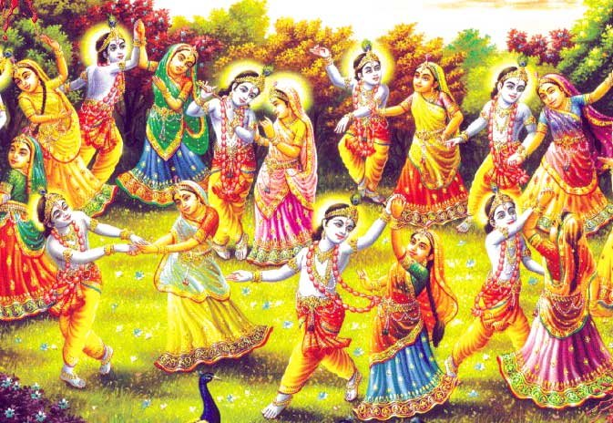

Історія Холі
Виникненню Холі передувало кілька легенд. За однією з легенд, назва Холі походить від імені
прекрасної і доброї Холіки. Злий цар отримав в дар від одного з богів безсмертя, уявив себе богом і
наказав усім своїм підданим поклонятися тільки йому. Але син царя не визнавав могутності свого
батька і продовжував молиться істинному Богу.
Виникненню Холі передувало кілька легенд. За однією з легенд, назва Холі походить від
імені
прекрасної і доброї Холіки. Злий цар отримав в дар від одного з богів безсмертя, уявив себе богом і
наказав усім своїм підданим поклонятися тільки йому. Але син царя не визнавав могутності свого
батька і продовжував молиться істинному Богу.
Коли Холіку прив'язали до стовпа, принц підійшов до неї і накрив барвистj. хусткою, а сам сів поруч.
Розпалили вогонь, і раптом порив вітру зірвав з Холіки рятівний хустку, і накрив ним хлопчика. Принц
намагався врятувати кохану тітоньку, але вогонь уже охопив її тіло, а очі з любов'ю дивилися на
племінника.
Так Холіка загинула. Принца ж вогонь не торкнувся, але глибоко проник в його душу, і хлопчик ще
міцніше увірував в бога. Бог вирішив покарати царя й пробив блискавкою його холодне серце. Так було
покарано зло і восторжествувала справедливість.
Ось чому на Холі жителі північної Індії мажуть один одного фарбами кольору священного покривала
Холіки, як символу спасіння принца і поливають водою, оберігаючи всіх від злих сил, допомагаючи
богам відновити справедливість.

Холі в Україні та світі
Фестиваль фарб святкують не лише в Індії, а й у Непалі, на Шрі-Ланці, в Бангладеш, Пакистані, ПАР,
Тринідад та інших країнах. Окрім того, на сьогодні яскраве свято заполонило ледь не півсвіту –
молодь його святкує у США, на острові Маврикій, у Великобританії, Іспанії, Франції, Португалії,
Фіджі та інших.
Свято Холі не так давно добралось до України, але встигло здобути неабияку популярність. Зокрема,
його проводять у Києві, Львові, Харкові та ще кількох містах. Та на відміну від Індії, в Україні
Холі святкують не на початку весни, а в середині або наприкінці літа.